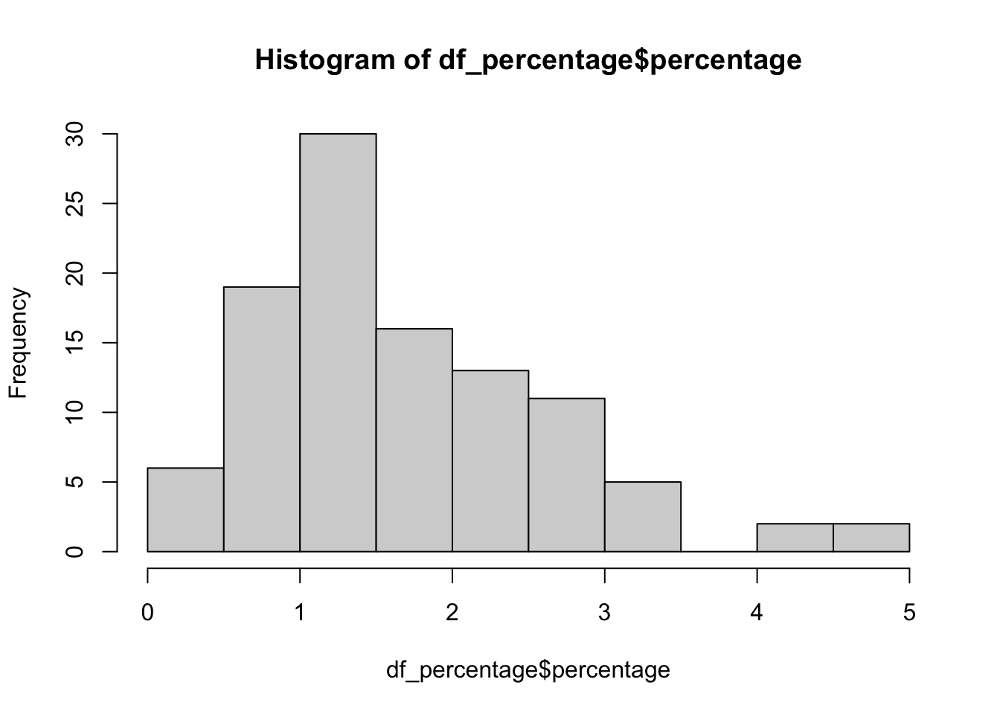
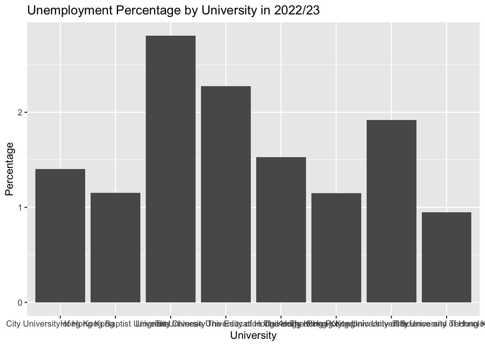
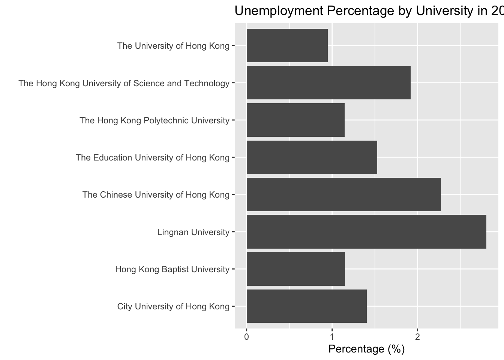
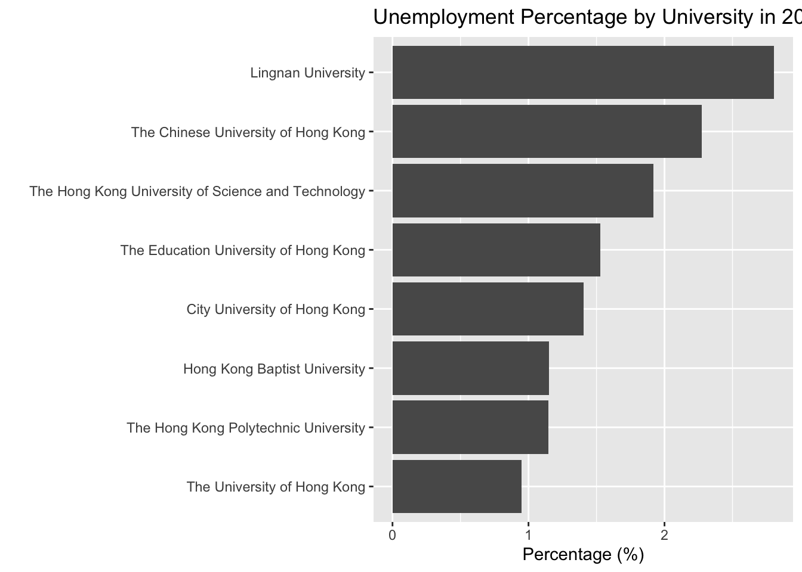
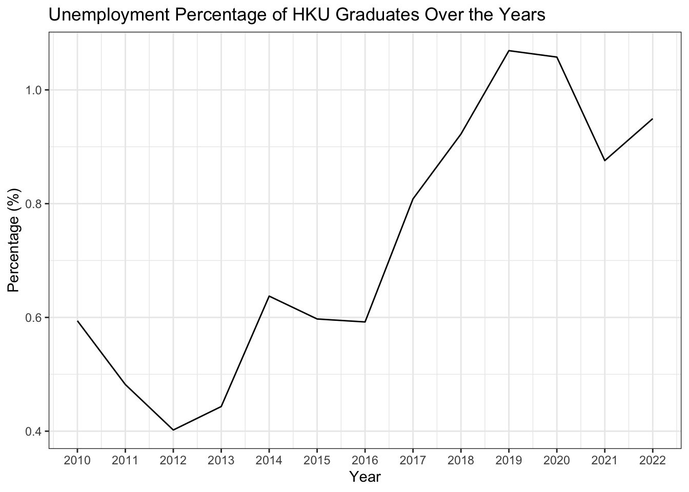
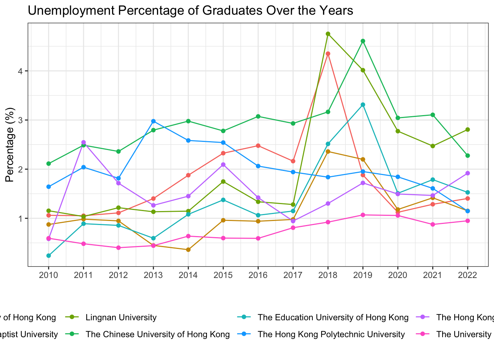
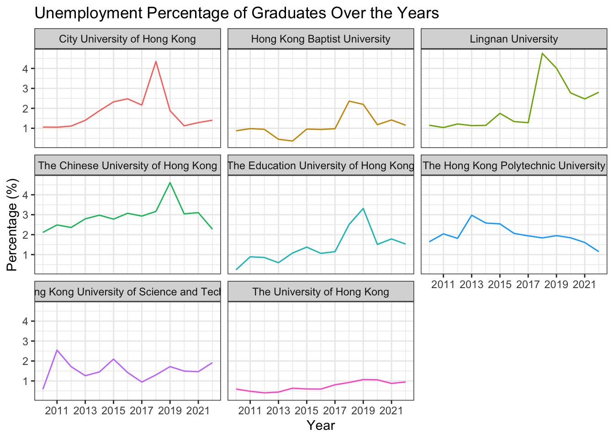
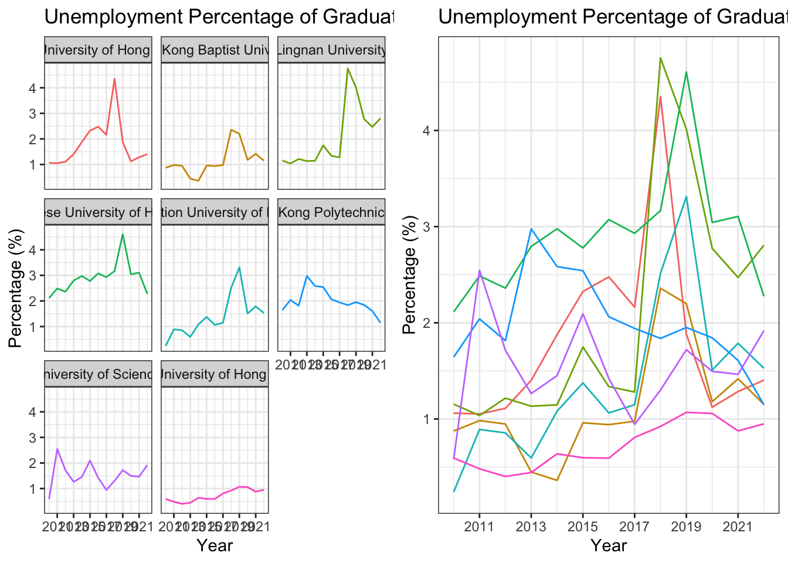
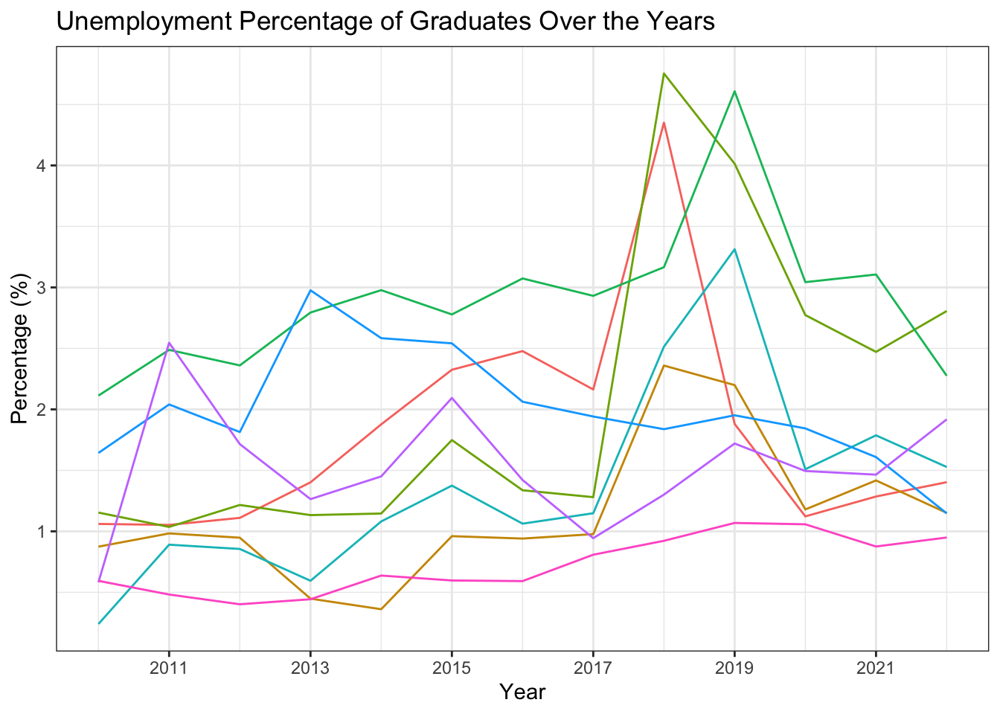

library(tidyverse)16 HK University Graduate Employment Situation
16.1 Learning Objectives
- Practice on Merging two data frames
- Learn how to use
left_join
- Learn how to use
- Practice more data analysis strategies on the “employment” data set
- Explore single variables
- Learn how to use
unique,table,hist,summary, andskim
- Practice more data visualization on the “employment” data set
- Flip the axis:
coord_flip - Reordering the axis:
fct_reorder - Plot with facets:
facet_wrap - Interactive Plots:
plotly
- Flip the axis:
16.2 Set up
In this week, you will continue working with the Graduate_Employment_Stituation(Eng).csv dataset. This dataset was downloaded from DATA.GOV.HK. It contains on employment situation of graduates of full-time UGC-funded programmes in Hong Kong. The full name of the dataset is “Employment Situation of Graduates of Full-time UGC-funded Programmes by University, Level of Study, Employment Situation and Occupation”.
16.3 Data Import and Cleaning
# Use your own path
df <- read_csv("data/employment.csv")df_cleaned <- df |>
rename(
`year` = `Academic Year`,
`university` = University,
`level` = `Level of study`,
`employment` = `Employment Situation`,
`occupation` = Occupation,
`headcount` = `Number of Graduates (Headcount)`
) |>
mutate(year_start = str_sub(year, 1, 4)) |>
mutate(year_start = as.integer(year_start)) |>
select(year_start, university, level, employment, headcount)
glimpse(df_cleaned)Rows: 5,669
Columns: 5
$ year_start <int> 2009, 2009, 2009, 2009, 2009, 2009, 2009, 2009, 2009, 2009,…
$ university <chr> "City University of Hong Kong", "City University of Hong Ko…
$ level <chr> "Research postgraduate", "Research postgraduate", "Research…
$ employment <chr> "FT employment", "FT employment", "FT employment", "FT empl…
$ headcount <dbl> 1, 2, 2, 1, 3, 1, 3, 1, 15, 2, 18, 8, 5, 1, 1, 97, 1, 6, 4,…16.4 Merging two data frames
For example, if you want to know what is the “Unemployment” percentage for each university in the most recent surveyed year, you may find it is hard to get the result directly from the df_cleaned dataset. You may need to do some data manipulation to get the result.
Let’s define the “Unemployment” percentage as the number of “Unemployed” graduates divided by the total number of graduates for each university in the most recent surveyed year.
\[ \text{Unemployment Percentage} = \frac{\text{Number of Unemployed Graduates}}{\text{Total Number of Graduates}} \]
::: {.callout-note title = “Question”} So take a minute to think about how you can get the result? Can you get the percentage from the df_cleaned dataset directly using the group_by and summarise functions? and why or why not? :::
n_unemployed
df_unemp <- df_cleaned |>
filter(employment == "Unemployed") |>
group_by(university, year_start) |>
summarise(n = sum(headcount))`summarise()` has grouped output by 'university'. You can override using the
`.groups` argument.glimpse(df_unemp)Rows: 111
Columns: 3
Groups: university [8]
$ university <chr> "City University of Hong Kong", "City University of Hong Ko…
$ year_start <int> 2009, 2010, 2011, 2012, 2013, 2014, 2015, 2016, 2017, 2018,…
$ n <dbl> 28, 29, 30, 33, 43, 58, 80, 89, 74, 140, 65, 40, 39, 45, 17…n_total
df_total <- df_cleaned |>
group_by(university, year_start) |>
summarise(total_n = sum(headcount))`summarise()` has grouped output by 'university'. You can override using the
`.groups` argument.glimpse(df_total)Rows: 112
Columns: 3
Groups: university [8]
$ university <chr> "City University of Hong Kong", "City University of Hong Ko…
$ year_start <int> 2009, 2010, 2011, 2012, 2013, 2014, 2015, 2016, 2017, 2018,…
$ total_n <dbl> 2667, 2734, 2850, 2972, 3067, 3090, 3441, 3592, 3421, 3218,…Calculate the percentage and create a new dataframe
Merge the two dataframes
Notice that df_unemp and df_total have the same columns “university” and “year_start”. You can use the left_join function to merge the two dataframes by these two columns.
However, df_unemp has 111 rows and df_total has 112 rows. This is because there is one university in df_unemp that is not in df_total. You can use the anti_join function to find out which university is not in df_total.
table(df_unemp$university, df_unemp$year_start)
table(df_total$university, df_total$year_start)So here we found the data for “The Education University of Hong Kong” in 2009 is missing. So we can remove the 2009 from the dataset just for the purpose of this analysis.
df_unemp <- df_unemp |>
filter(year_start != 2009)
df_total <- df_total |>
filter(year_start != 2009)df_percentage <- df_unemp |>
left_join(df_total, by = c("university", "year_start")) |>
mutate(percentage = n / total_n * 100)
df_percentage16.5 More on data explore
So far, you have learnt how to explore a dataset by looking at the first few rows, the column details. Often, you may want to explore the dataset in more detail. Especially for columns/variables. You should notice that for different types of columns, you may need to use different strategies and functions to explore them. For example, for a numeric column, you may want to know the mean, median, min, max, etc. For a character column, you may want to know the unique values, the frequency of each unique value, etc.
unique()
For example, in the df dataset, you may want to explore the Occupation column. You can use the unique() function to get all the unique values in the Occupation column.
unique() is a function that returns a vector of the unique values in a vector or data frame column. It is provided by the base R, so you don’t need to load any additional packages to use it.
unique(df$University)[1] "City University of Hong Kong"
[2] "Hong Kong Baptist University"
[3] "Lingnan University"
[4] "The Chinese University of Hong Kong"
[5] "The Education University of Hong Kong"
[6] "The Hong Kong Polytechnic University"
[7] "The Hong Kong University of Science and Technology"
[8] "The University of Hong Kong" table()
You may also want to know the frequency of each unique value in the Occupation column. You can use the table() function to get the frequency of each unique value in the Occupation column.
table() is a function that returns the frequency of each unique value in a vector or data frame column. It is provided by the base R, so you don’t need to load any additional packages to use it.
table(df$Occupation)
Accountants and Auditors
134
Agriculture and Fishery Workers
34
Aircraft and Ship Officers
74
Architects and Surveyors
153
Artists
159
Authors, Journalists and Related Writers
182
Business Professionals
259
Clerical and Related Workers
175
Economists, Statisticians and Mathematicians
171
Engineering Technicians
159
Engineers
193
Government Administrators and Diplomats
33
Government Officials (General Grades)
161
Insurance, Real Estate, and Business Services
151
Legal Workers
124
Managers
199
Medical and Health Workers
195
Not in Full-time Employment
1186
Occupations not elsewhere classified
49
Other Professionals and Technical Workers
205
Other Service Workers
136
Physical and Life Science Technicians
155
Physical and Life Scientists
159
Production and Related Workers
76
Protective Service Workers
138
Religious Workers
69
Sales/Service Workers
155
System Analysts and Computer Programmers
199
Teaching Profession
315
Workers not reporting any occupation
210
Workers reporting occupations unidentifiable or inadequately described
61
Tip
You can use table() to also get the frequency of unique value for a combination of two columns. For example, if you want to know the frequency of each unique value in the Occupation column for each University, you can use the following code: table(df$University, df$Occupation).
extension
Can you use group_by and summarise to get the same result?
df |>
group_by(Occupation) |>
summarise(n = n())summary()
Notice that the unique and table functions are particularly useful for character columns. For numeric columns, the exploration can be very straightforward, such as getting the mean, median, min, max, etc. For example, if you want to explore the percentage column in the df_percentage dataset.
mean(df_percentage$percentage)[1] 1.69358median(df_percentage$percentage)[1] 1.435754min(df_percentage$percentage)[1] 0.240096max(df_percentage$percentage)[1] 4.75382Also, there is a very handy function called summary() that can give you a summary of the numeric column. It provides the min, 1st Qu, median, mean, 3rd Qu, max for the numeric column.
summary(df_percentage$percentage) Min. 1st Qu. Median Mean 3rd Qu. Max.
0.2401 1.0485 1.4358 1.6936 2.2880 4.7538 1st Qu and 3rd Qu are the first and third quartiles, respectively. They are the values that divide the data into four equal parts. The median is the middle value of the data. The min and max are the minimum and maximum values of the data, respectively.
hist()
For a numeric column, you may also want to know the distribution of the data. You can use the hist() function to plot a histogram of the data.
hist(df_percentage$percentage)
::: {.callout-note title = “Question”} Can you dont use hist() on a character column to get the distribution of the data, and why? :::
skim package
Actually, there are some packages that can help you explore the data more efficiently. For example, the skimr package provides a more comprehensive summary of the data.
First, lets load the skimr package.
# install the package if you haven't installed it
# run install.packages("skim") in console, don't run this in the R markdown
library(skimr)Then, you can simply run the skim() function on the dataset to get a comprehensive summary of the data. Let’s try the skim() function on the df dataset.
skim(df)| Name | df |
| Number of rows | 5669 |
| Number of columns | 6 |
| _______________________ | |
| Column type frequency: | |
| character | 5 |
| numeric | 1 |
| ________________________ | |
| Group variables | None |
Variable type: character
| skim_variable | n_missing | complete_rate | min | max | empty | n_unique | whitespace |
|---|---|---|---|---|---|---|---|
| Academic Year | 0 | 1 | 7 | 7 | 0 | 14 | 0 |
| University | 0 | 1 | 18 | 50 | 0 | 8 | 0 |
| Level of study | 0 | 1 | 10 | 21 | 0 | 4 | 0 |
| Employment Situation | 0 | 1 | 6 | 15 | 0 | 5 | 0 |
| Occupation | 0 | 1 | 7 | 70 | 0 | 31 | 0 |
Variable type: numeric
| skim_variable | n_missing | complete_rate | mean | sd | p0 | p25 | p50 | p75 | p100 | hist |
|---|---|---|---|---|---|---|---|---|---|---|
| Number of Graduates (Headcount) | 0 | 1 | 51.34 | 107.38 | 1 | 2 | 11 | 46 | 1014 | ▇▁▁▁▁ |
You will see the output including three pages: overall description, two one_skim_df. - The overall description provides the summary of the dataset, including the number of rows, columns, missing values, etc. - The second page page shows details for character columns. The useful information includes the number of missing values, the number of unique values. You may find this page also shows information about min and max, however, this is not about the min and max of the data, but the min and max of the length of the string in the column. - The third page shows a description of all the numeric columns. You will find in additional to n_missing, it also provides the mean, sd, p0, p25, p50, p75.
16.6 Data visualization
Bar Plot
- Create a bar plot to show the percentage of graduates who are “Unemployed” for each university in the most recent surveyed year (2022). Use the
df_percentagedataframe.
df_percentage |>
filter(year_start == 2022) |>
ggplot(aes(x = university, y = percentage)) +
geom_col() +
labs(title = "Unemployment Percentage by University in 2022/23",
x = "University",
y = "Percentage")
Bar Plot + coord_flip()
df_percentage |>
filter(year_start == 2022) |>
ggplot(aes(x = university, y = percentage)) +
geom_col() +
1 coord_flip() +
labs(title = "Unemployment Percentage by University in 2022/23",
x = " ",
y = "Percentage (%)")- 1
-
coord_flip()is a function that flips the x and y axes. It is useful when you have a lot of categories on the x-axis and the labels are long, so it is better to put them on the y-axis.

reordering the bars
df_percentage |>
filter(year_start == 2022) |>
1 ggplot(aes(x = fct_reorder(university, percentage), y = percentage)) +
geom_col() +
coord_flip() +
labs(title = "Unemployment Percentage by University in 2022/23",
x = " ",
y = "Percentage (%)")- 1
-
fct_reorder()is a function that reorders the levels of a factor based on a summary statistic. In this case, we are reordering the levels of theuniversityfactor based on thepercentagecolumn.

Note
fct_reorder() is a function provided by the forcats package, which is part of the tidyverse. You don’t need to load the forcats package explicitly because it is loaded automatically when you load the tidyverse.
add labels
df_percentage |>
filter(year_start == 2022) |>
ggplot(aes(x = fct_reorder(university, percentage), y = percentage)) +
geom_col() +
1 geom_text(aes(label = round(percentage, 1)), hjust = -0.1) +
coord_flip() +
labs(title = "Unemployment Percentage by University in 2022/23",
x = "University",
y = "Percentage")- 1
-
geom_text()is a function that adds text labels to the plot. In this case, we are adding thepercentagevalues to the plot. Thehjustargument controls the horizontal justification of the text. A value of -0.1 means the text is slightly to the right of the bar.
Line Plot
- Create a line plot to show the percentage of Unemployed graduates for HKU over the years.
df_percentage |>
filter(university == "The University of Hong Kong") |>
ggplot(aes(x = year_start, y = percentage)) +
geom_line() +
1 scale_x_continuous(breaks = seq(2009, 2022, 1)) +
labs(title = "Unemployment Percentage of HKU Graduates Over the Years",
x = "Year",
y = "Percentage (%)") +
theme_bw()- 1
-
scale_x_continuous()is a function that controls the breaks (tick marks) on the x-axis. In this case, we are setting the breaks to be every year from 2009 to 2022.

Line Plot with Multiple Lines
df_percentage |>
ggplot(aes(x = year_start, y = percentage, color = university)) +
geom_line() +
geom_point() +
scale_x_continuous(breaks = seq(2009, 2022, 1)) +
labs(title = "Unemployment Percentage of Graduates Over the Years",
x = " ",
y = "Percentage (%)") +
theme_bw() +
1 theme(legend.position = "bottom")- 1
-
theme(legend.position = "bottom")is a function that moves the legend to the bottom of the plot. The default position is at the right of the plot.

Note
Within the theme() function, you can use the legend.position argument to control the position of the legend. The possible values are “none”, “left”, “right”, “top”, “bottom”, “topright”, “topleft”, “bottomright”, “bottomleft”.
Plot with Facets
df_percentage |>
ggplot(aes(x = year_start, y = percentage, color = university)) +
geom_line() +
labs(title = "Unemployment Percentage of Graduates Over the Years",
x = "Year",
y = "Percentage (%)") +
scale_x_continuous(breaks = seq(2009, 2022, 2)) +
1 facet_wrap(~university) +
theme_bw() +
theme(legend.position = "none")- 1
-
facet_wrap(~university)is a function that creates a separate plot for each level of theuniversityfactor. In this case, we are creating a separate plot for each university. The~symbol is used to specify the variable that you want to facet by.

Save the plots
df_percentage |>
ggplot(aes(x = year_start, y = percentage, color = university)) +
geom_line() +
labs(title = "Unemployment Percentage of Graduates Over the Years",
x = "Year",
y = "Percentage (%)") +
scale_x_continuous(breaks = seq(2009, 2022, 2)) +
facet_wrap(~university) +
theme_bw() +
theme(legend.position = "none")- 1
-
ggsave()is a function that saves the plot to a file. In this case, we are saving the plot as a PNG file with a width of 10 inches, a height of 6 inches, and a resolution of 300 dpi.

1# ggsave("line_plot.png", width = 10, height = 6, dpi = 300)
Note
dpi stands for dots per inch, which is the resolution of the image. The higher the dpi, the higher the resolution of the image. The default dpi is 300, which is a good resolution for most purposes.
Arrange multiple plots
Sometimes, you may want to put multiple plots together for comparison or presentation. You can use the gridExtra package to arrange multiple plots on a single page. Install the gridExtra package if you haven’t installed it yet.
library(gridExtra)Here you can created two plots p1 and p2 and put them together using the grid.arrange() function.
The code grid.arrange(p1, p2, ncol = 2) means to put p1 and p2 together in two columns.
p1 <- df_percentage |>
ggplot(aes(x = year_start, y = percentage, color = university)) +
geom_line() +
labs(title = "Unemployment Percentage of Graduates Over the Years",
x = "Year",
y = "Percentage (%)") +
scale_x_continuous(breaks = seq(2009, 2022, 2)) +
facet_wrap(~university) +
theme_bw() +
theme(legend.position = "none")
p2 <- df_percentage |>
ggplot(aes(x = year_start, y = percentage, color = university)) +
geom_line() +
labs(title = "Unemployment Percentage of Graduates Over the Years",
x = "Year",
y = "Percentage (%)") +
scale_x_continuous(breaks = seq(2009, 2022, 2)) +
theme_bw() +
theme(legend.position = "none")
# put p1 and p2 together
grid.arrange(p1, p2, ncol = 2)
Interactive Plot with plotly
When you plot using ggplot2, you can easily convert it to an interactive plot using the plotly package. This is super useful when you want to share your plot online or in a presentation, especially when the plot involves multiple lines or facets.
Install the plotly package if you haven’t installed it yet. (Run install.packages("plotly") in the console)
library(plotly)For example, here we first create a line plot using ggplot2, then convert it to an interactive plot using ggplotly().
p <- df_percentage |>
ggplot(aes(x = year_start, y = percentage, color = university)) +
geom_line() +
labs(title = "Unemployment Percentage of Graduates Over the Years",
x = "Year",
y = "Percentage (%)") +
scale_x_continuous(breaks = seq(2009, 2022, 2)) +
theme_bw() +
theme(legend.position = "none")
p
Then, you can convert the plot to an interactive plot using the ggplotly() function. This interactive plot provides additional features such as zooming, panning, auto-scaling, etc.
ggplotly(p)